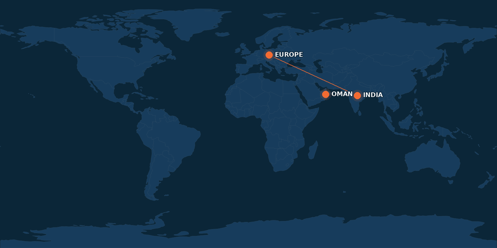
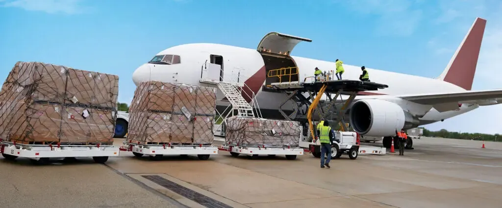

India
Engineering, manufacturing coordination and technical sourcing.
.png)
Aircraft engineering, ground support, defence, logistics and specialised equipment — connected from requirement to delivery.
Premier Aviation Services brings engineering, sourcing, manufacturing, project execution and after-sales support together around the customer's operational requirement.
Founded in 2016, PAS operates across aviation, defence and logistics with a global network of more than 200 OEMs and technology partners. The objective is simple: identify the right technical route, coordinate the right partners and stay involved through delivery and support.
See how we work →Eight connected capability areas let PAS move from a requirement to an engineered, delivered and supported solution.
 01
01GSE, aircraft support equipment and operational solutions.
 02
02Specialised equipment, sourcing and project support.
 03
03Engineering, parts, repair and maintenance support.
 04
04Application-specific solutions where standard equipment is not enough.
 05
05Technical sourcing and partner identification across the supply chain.
 06
06Fabrication and engineered component delivery.
 07
07From requirement definition and technology selection to implementation.
 08
08Support that continues after equipment enters operation.
PAS supports civil and defence aviation requirements through its technology and manufacturing network. The portfolio spans motorised and non-motorised GSE, customised equipment and specialised support systems.
Explore ATLAS Non-Motorised GSE →PAS combines local engineering and project coordination with technology partners and customers across India, the Middle East, Europe and other operating markets.

Engineering, sourcing and project coordination anchored in India, with customer and partner connections across the Middle East and Europe.
Engineering, manufacturing coordination and technical sourcing.
Regional aviation, defence and logistics requirements.
Customer and technology-partner connections across aviation markets.
The value is not just the equipment. It is the engineering, coordination and support around it.
Understand platform, operating environment, interfaces, load, compliance and timeline.
Identify suitable OEMs, technology partners and engineering routes.
Develop, customise, manufacture or integrate the solution around the requirement.
Coordinate logistics, commissioning, documentation and handover.
Continue with spares, maintenance, technical assistance and lifecycle support.

INTEGRATIONDEFENCE / LOGISTICSPAS works with technology partners to support defence requirements across air, land and marine applications.
Capabilities include specialised aviation ground equipment, maintenance-facility support, engine storage and transport solutions, tactical support, vehicle solutions, specialist sourcing and logistics coordination.
When the application is specific, PAS can combine engineering, sourcing and project coordination around the actual operating requirement.
Civil and military marine equipment sourcing and operational support.
Firefighting, emergency response and specialised safety solutions.
Composite repair support, tooling and structural repair solutions.
Custom test equipment and training solutions for maintenance operations.
Component availability, replacement and sourcing strategies.
Project coordination from concept through implementation and support.
Explore the dedicated ATLAS portfolio of baggage carts, container dollies and pallet dollies.
Define the operating requirement and constraints.
Match the requirement to the right technology and partners.
Coordinate customisation, manufacturing, logistics and handover.
Stay involved through spares, maintenance and technical support.
Tell us what you need to solve. Our team can help identify the engineering, equipment, technology or project route.
Talk to PAS →